SA08 — Cloud Computing Kya Hai — IaaS, PaaS, SaaS Ka Pura Funda?
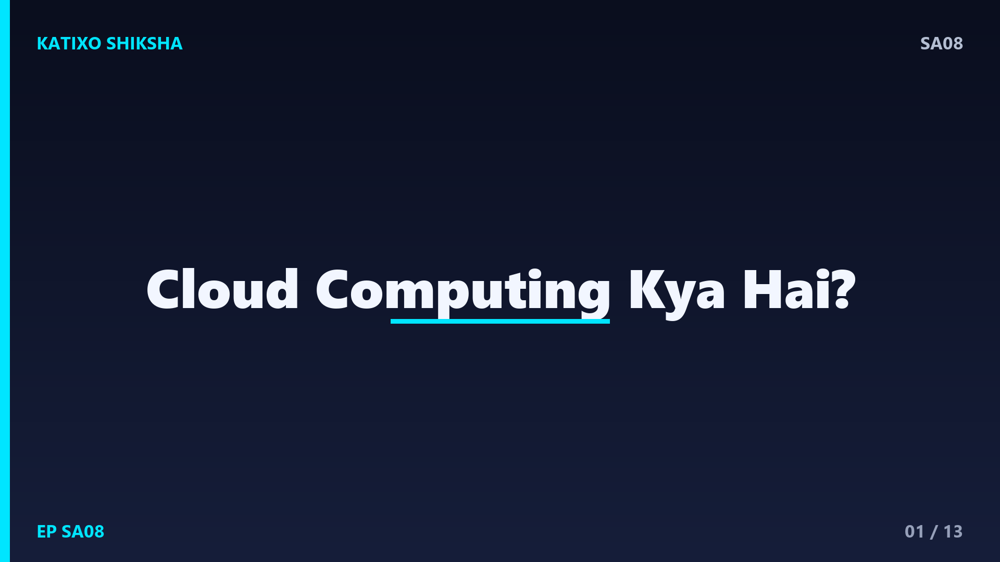
Slide 1दोस्तों, सोचिए आपको एक app launch करना है. पुराने ज़माने में इसका मतलब था — महँगे servers खरीदो, उन्हें एक कमरे में रखो, बिजली और cooling का इंतज़ाम करो, और रात-दिन उनकी देखभाल करो. और अगर आपका app hit हो गया, तो और servers खरीदने में हफ़्तों लग जाते. आज आप यही सब चंद मिनटों में, internet से, किराए पर ले सकते हो. यही है cloud computing का कमाल. आज Katixo KhojLab की इस episode में हम Hinglish में cloud, और IaaS, PaaS, SaaS समझेंगे. चलिए शुरू करते हैं।
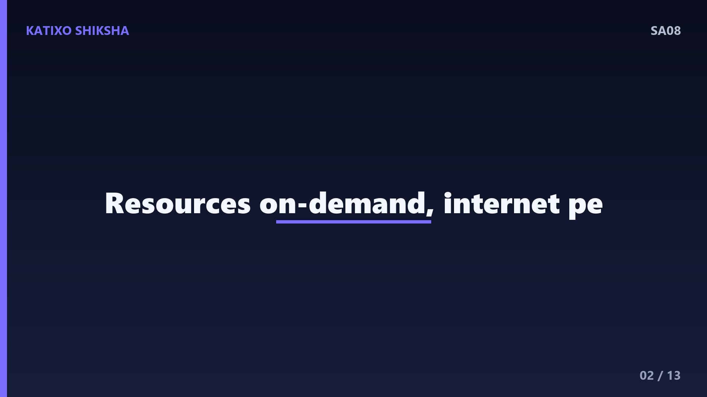
Slide 2सबसे पहले — cloud computing है क्या? सीधे शब्दों में, cloud computing मतलब computing resources — जैसे servers, storage, database, और networking — internet के ज़रिए on-demand किराए पर लेना, बजाय इन्हें खुद खरीदने और चलाने के. ये resources किसी cloud provider के बड़े-बड़े data centers में रहते हैं, जैसे AWS, Microsoft Azure या Google Cloud. आप जितना use करते हो, उतना ही pay करते हो — इसे pay-as-you-go कहते हैं. ना upfront बड़ा खर्च, ना hardware की चिंता.
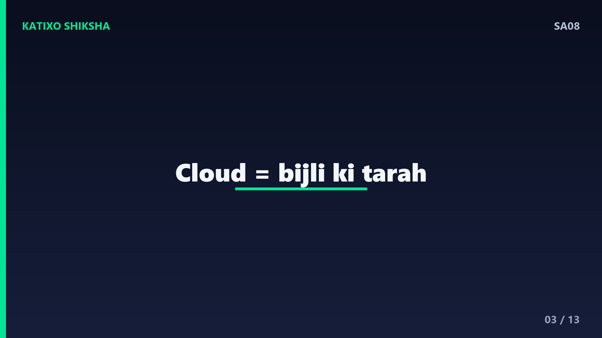
Slide 3इसे एक आसान analogy से समझते हैं — बिजली का. आप घर में बिजली बनाने के लिए अपना खुद का power plant नहीं लगाते. आप बस switch on करते हो, बिजली आती है, और महीने के अंत में जितनी use की उतना bill आता है. बिजली का grid किसी और का है, maintenance किसी और का सिरदर्द है. Cloud बिल्कुल ऐसा ही है — computing power एक utility की तरह, switch on करो और use करो. आपको data center चलाने की ज़रूरत नहीं, बस ज़रूरत के हिसाब से resources लो.
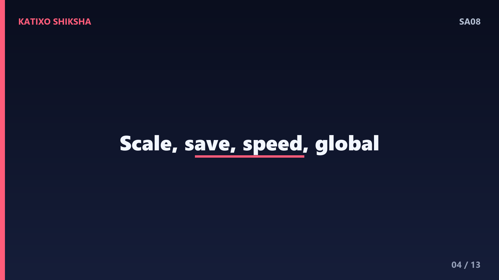
Slide 4अब cloud के कुछ key फ़ायदे. पहला — scalability, traffic बढ़े तो मिनटों में और resources जोड़ लो, घटे तो हटा दो, इसे elasticity कहते हैं. दूसरा — cost saving, बड़ा upfront hardware खर्च नहीं, सिर्फ़ इस्तेमाल का pay. तीसरा — speed, नया server मिनटों में तैयार, हफ़्तों का इंतज़ार नहीं. चौथा — global reach, दुनिया भर के data centers से users के पास अपना app रख सकते हो. और पाँचवाँ — reliability, providers backups और redundancy देते हैं ताकि downtime कम हो.
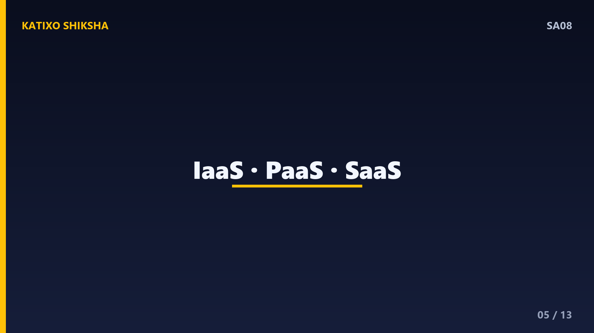
Slide 5अब cloud का सबसे ज़रूरी interview topic — service models, यानी IaaS, PaaS और SaaS. ये तीनों इस बात का फ़र्क हैं कि कितना हिस्सा cloud provider सँभालता है और कितना आप. इन्हें समझने का सबसे आसान तरीका है — सोचो कि एक application चलाने में कई layers होती हैं, जैसे hardware, operating system, runtime, और खुद app. इन तीन models में, नीचे से ऊपर की तरफ़, provider धीरे-धीरे ज़्यादा-ज़्यादा हिस्सा अपने हाथ में ले लेता है. चलिए एक-एक करके देखते हैं.
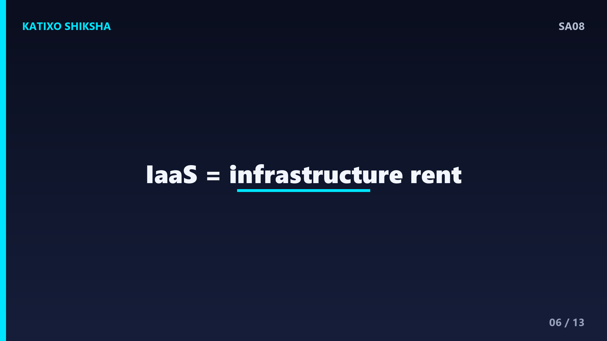
Slide 6सबसे पहले IaaS — Infrastructure as a Service. यहाँ provider आपको basic building blocks किराए पर देता है — virtual servers, storage और networking. यानी आपको एक खाली virtual machine मिलती है, और बाक़ी सब — operating system install करना, app deploy करना, updates करना — आपके हाथ में. ये सबसे ज़्यादा control और flexibility देता है, पर ज़िम्मेदारी भी ज़्यादा. उदाहरण — AWS का EC2, या Google Compute Engine. जब आपको infrastructure पर पूरा control चाहिए, तब IaaS चुनते हैं.
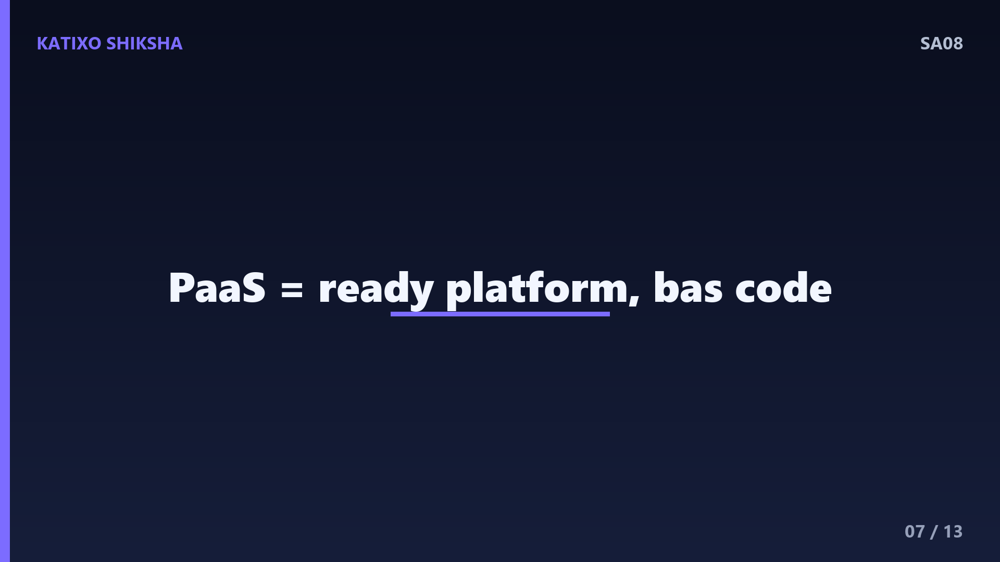
Slide 7अब बीच वाला — PaaS, यानी Platform as a Service. यहाँ provider सिर्फ़ servers नहीं, बल्कि एक पूरा ready platform देता है — operating system, runtime, database, सब managed. आपको बस अपना code upload करना है, बाक़ी servers, scaling, patching provider सँभालता है. इससे developers सिर्फ़ अपने app पर focus कर पाते हैं, infrastructure की झंझट नहीं. उदाहरण — Heroku, Google App Engine, या AWS Elastic Beanstalk. जब आप तेज़ी से app बनाकर deploy करना चाहते हो, बिना server manage किए, तब PaaS perfect है.
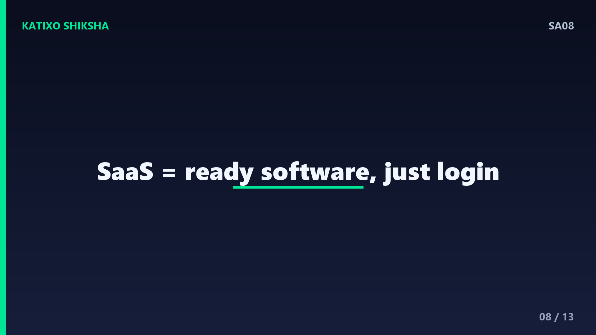
Slide 8अब सबसे ऊपर वाला — SaaS, यानी Software as a Service. यहाँ आपको पूरा ready-to-use software मिलता है, internet पर, बस login करो और use करो. ना कुछ install करना, ना manage. सारा infrastructure, platform और application provider सँभालता है, आप सिर्फ़ end user हो. उदाहरण — Gmail, Google Docs, Netflix, या Zoom. आप बस browser खोलते हो और काम शुरू. SaaS आम users के लिए है, जबकि IaaS और PaaS developers और businesses के लिए ज़्यादा होते हैं.
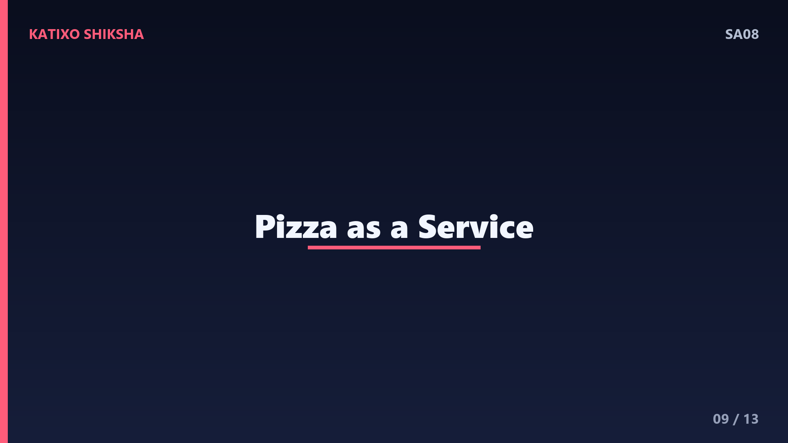
Slide 9तीनों को एक मज़ेदार pizza analogy से जोड़ते हैं, जो interviews में याद रखने में मदद करती है. सोचो आपको pizza खाना है. On-premise मतलब घर पर सब कुछ खुद बनाना — आटा, oven, सब अपना. IaaS मतलब आपने तैयार base किट खरीदी, oven घर का, बाक़ी आप पकाओ. PaaS मतलब आपने घर पर delivery मँगाई, pizza बना-बनाया आया, आप बस खाने की मेज़ सजाओ. और SaaS मतलब आप restaurant गए, बैठे, और pizza परोसा गया — कुछ नहीं करना. जितना ऊपर जाते हो, उतना कम झंझट.
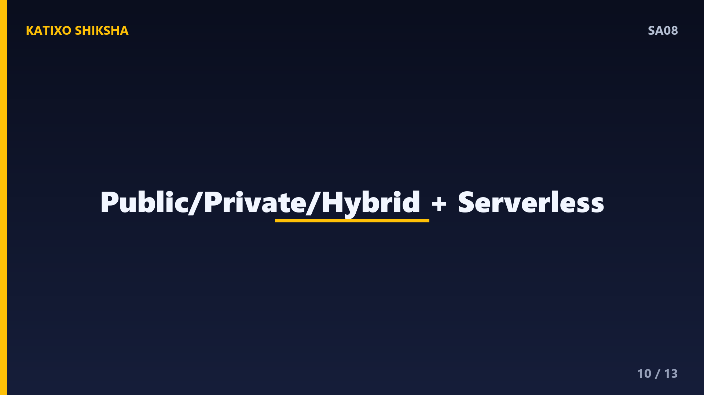
Slide 10अब कुछ ज़रूरी extra concepts जो interviews में पूछे जाते हैं. एक है deployment models — public cloud यानी सबके shared resources जैसे AWS, private cloud यानी एक ही organization का अपना, और hybrid cloud यानी दोनों का मेल. दूसरा बढ़ता हुआ concept है serverless, जैसे AWS Lambda — यहाँ आप servers के बारे में सोचते ही नहीं, बस function लिखते हो और जब चले तभी pay करते हो. ये PaaS से भी एक कदम आगे है, जहाँ scaling और servers पूरी तरह छुपे रहते हैं.
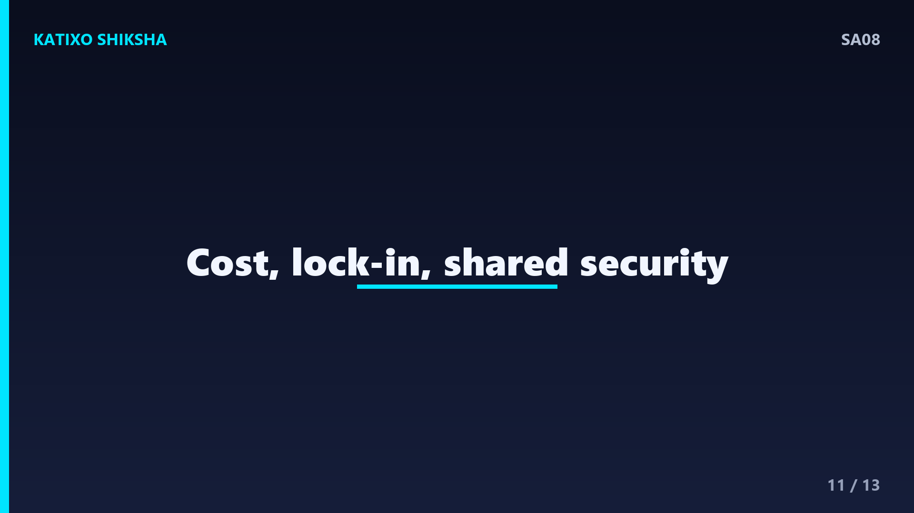
Slide 11अब cloud की कुछ सावधानियाँ और interview points. पहला — cost बेकाबू हो सकती है अगर resources बंद करना भूल जाओ, इसलिए monitoring ज़रूरी है. दूसरा — vendor lock-in, यानी एक provider पर बहुत निर्भर हो जाना, जिससे बाद में बदलना मुश्किल. तीसरा — security एक shared responsibility है, provider infrastructure सँभालता है पर आपके data और access की सुरक्षा आपकी ज़िम्मेदारी है. Interview में हमेशा याद रखिए — model जितना ऊपर, यानी SaaS की तरफ़, आपका control उतना कम, पर झंझट भी उतनी कम.
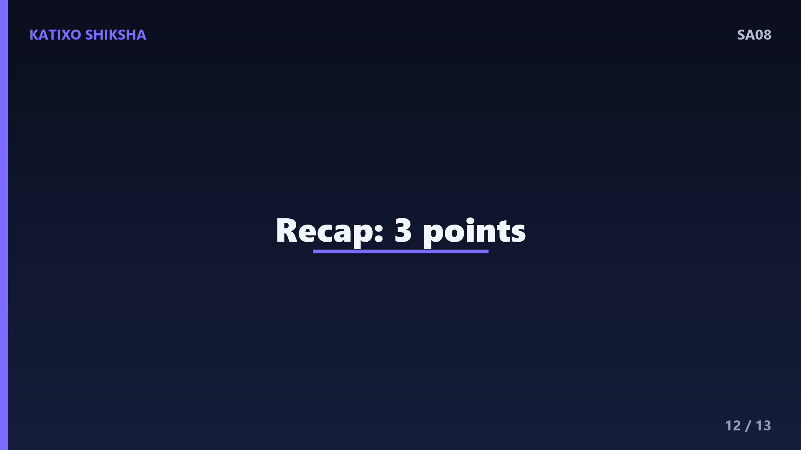
Slide 12तो चलिए एक quick recap कर लेते हैं, तीन points में. पहला — cloud computing मतलब servers, storage और database जैसे resources internet पर on-demand किराए पर लेना, pay-as-you-go तरीके से, बजाय खुद खरीदने के. दूसरा — तीन main service models हैं — IaaS जो infrastructure देता है, PaaS जो ready platform देता है, और SaaS जो पूरा software देता है. तीसरा — जैसे-जैसे IaaS से SaaS की तरफ़ बढ़ते हो, provider ज़्यादा सँभालता है और आपका control व ज़िम्मेदारी घटती जाती है.
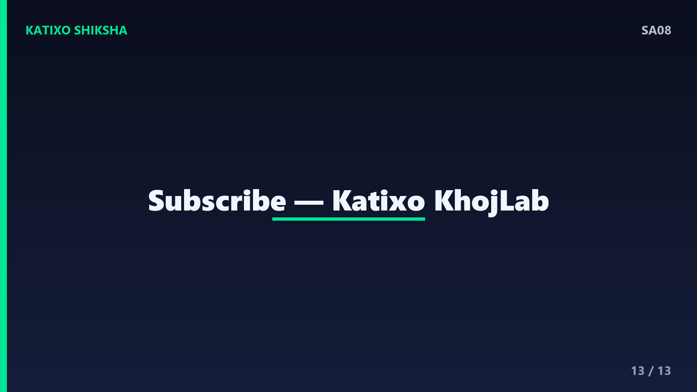
Slide 13तो दोस्तों, आज आपने सीखा कि cloud computing ने software बनाने और चलाने का पूरा तरीका बदल दिया है — अब छोटी सी team भी दुनिया भर में scalable app चला सकती है, बिना एक भी server खरीदे. अगली बार जब interview में cloud का सवाल आए, तो आप confidently IaaS, PaaS, SaaS, serverless, और shared responsibility की बात कर पाओगे. एक बार किसी cloud provider का free tier लेकर एक छोटा server या app खुद deploy करके देखें, सब साफ़ हो जाएगा. Aisi aur system design videos ke liye Katixo KhojLab subscribe karein! मिलते हैं अगली episode में।